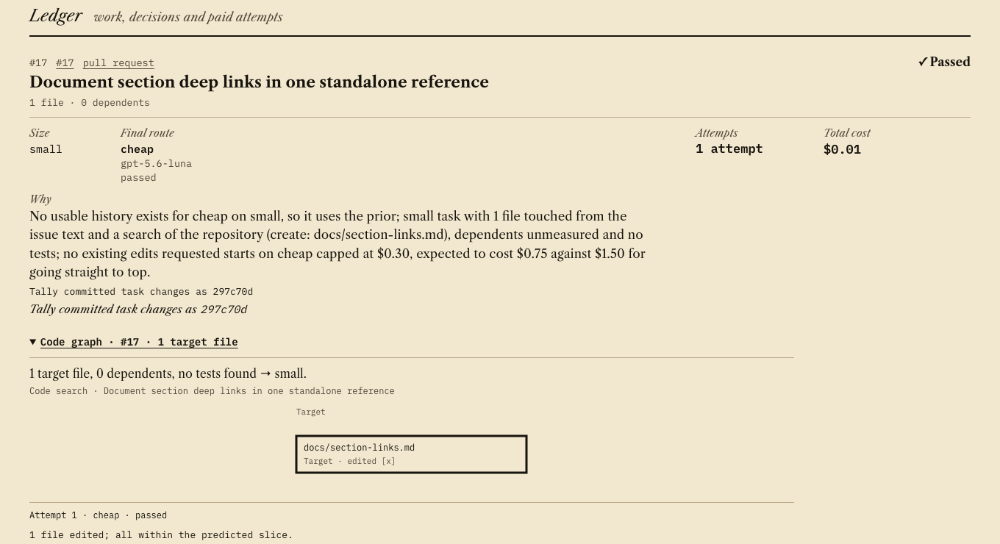
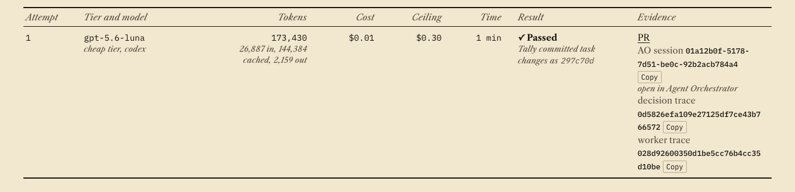

30%
The agent
“How well the agent, or the system of agents, handles a substantial task from start to finish.”
Four ways to run an agent, each ending in a real pull request
One task each on Vaibhaav-Tiwari/chip-design-groundup. Cost per run, estimated at list price.
Stopped at its ceiling, then finished by a stronger model
- stoppedAttempt 1, cheap tier: $0.0153 spent against a $0.0150 ceiling, set low on purpose.
- handoffWork in progress committed; the next model continued the same branch.
- passedAttempt 2, middle tier: $0.0815, fly-doom-jev PR #14.
Proven once, in run run-20261010-201255Z.
Three agents at once, inside one budget
Run run-20261011-190131Z went through Agent Orchestrator with three Codex workers at once (tally run --parallel 3). Issues #19, #20 and #21 started within the same second, all passed on the cheap tier, and the three sessions overlapped for 70 seconds.
Total $0.0411, estimated at list price, against a $2.00 cap. cfo.ai spend rose by exactly the ledger total. Tally merged none of them.





Show details
- Run ids:
run-20261011-092229Z,run-20261011-123546Z,run-20261011-123814Z,run-20261011-130259Z. - Tally verifies each change by running the repository's test command itself, then opens the pull request. It never merges.
- 687 automated tests pass on the branch this page was built from.
- Not proven in a real run yet: escalation on the direct runner. Parallel runs are through Agent Orchestrator only. The README keeps the list.